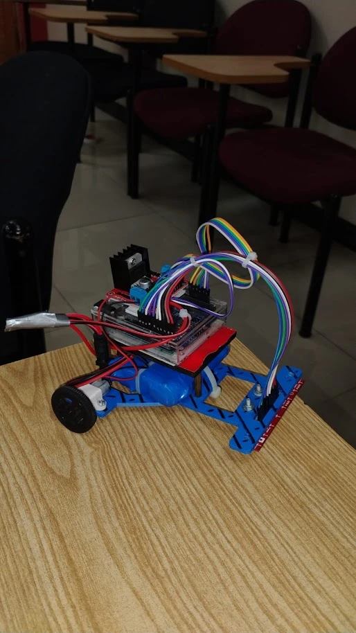
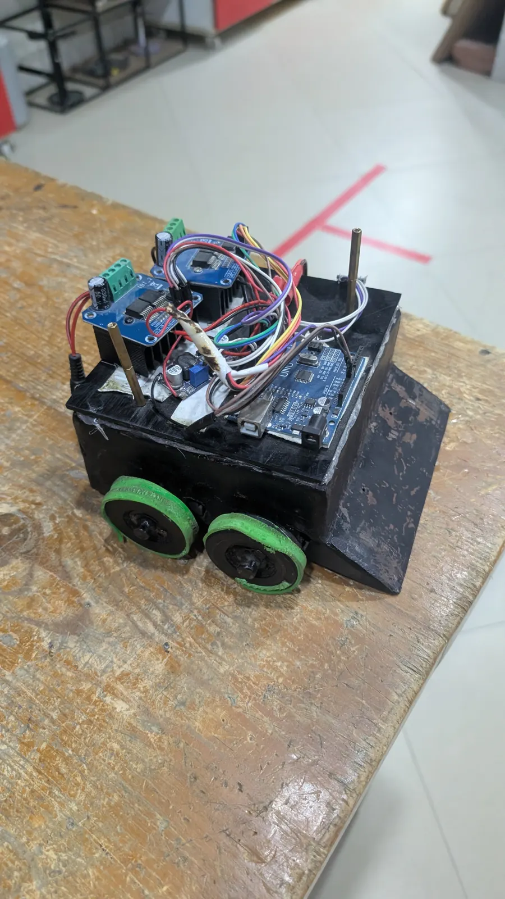
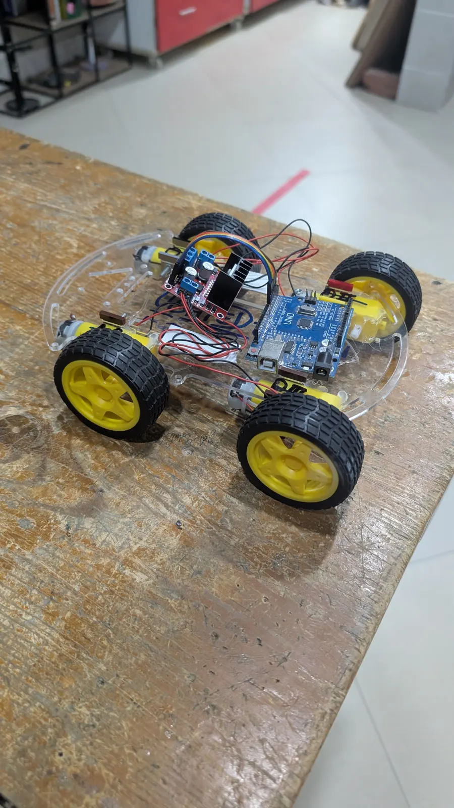
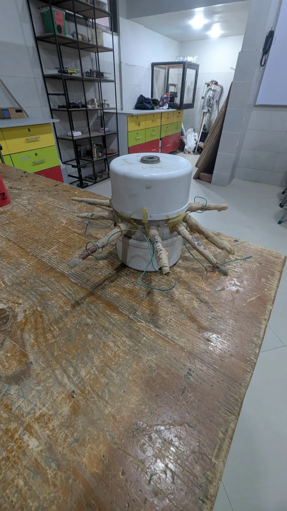
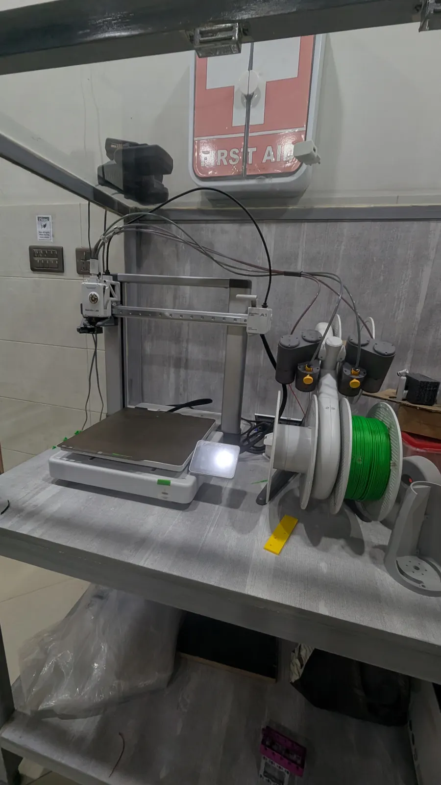
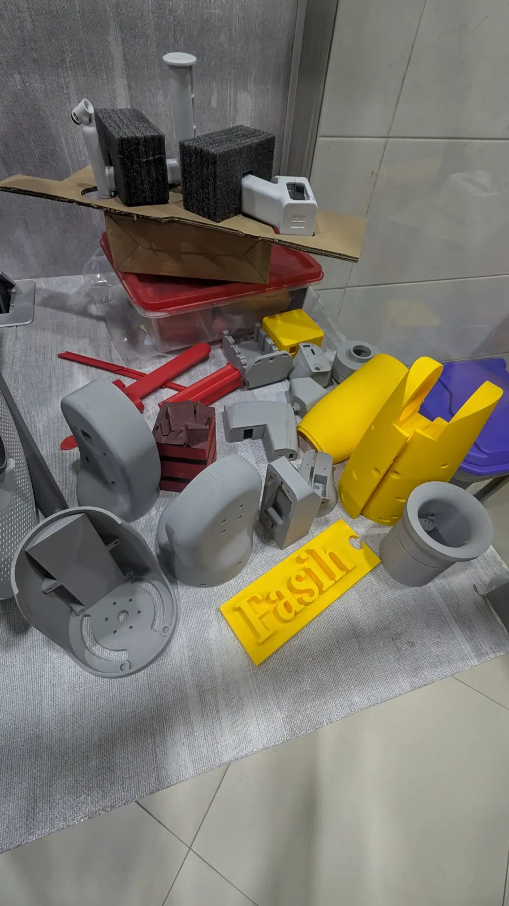
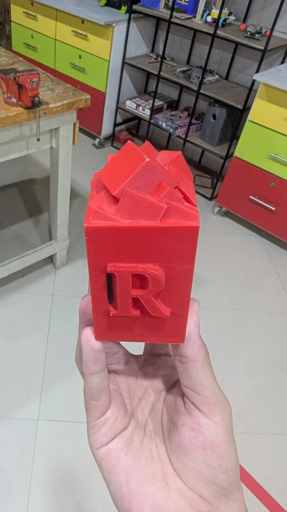
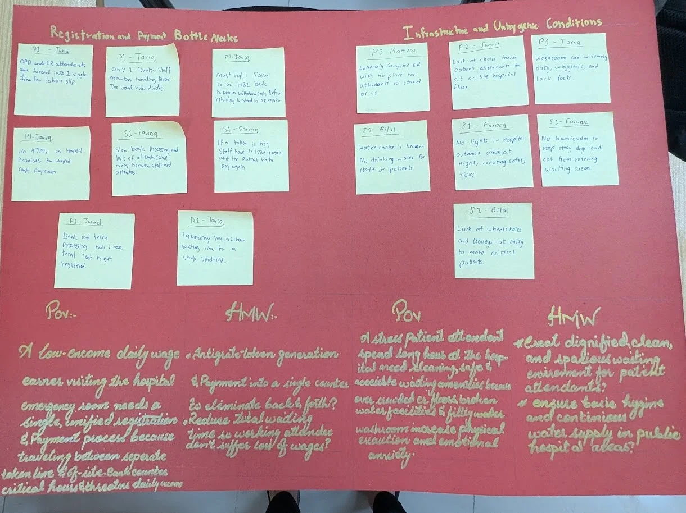
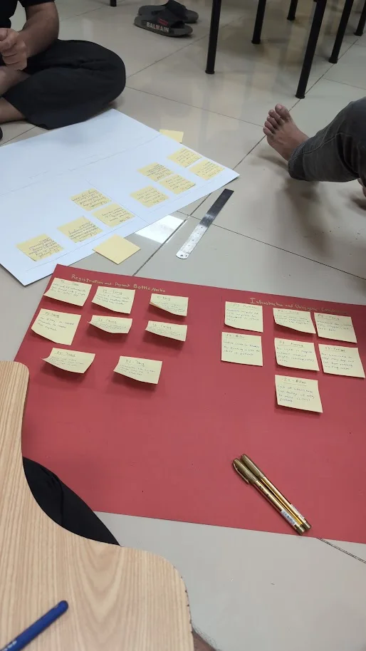
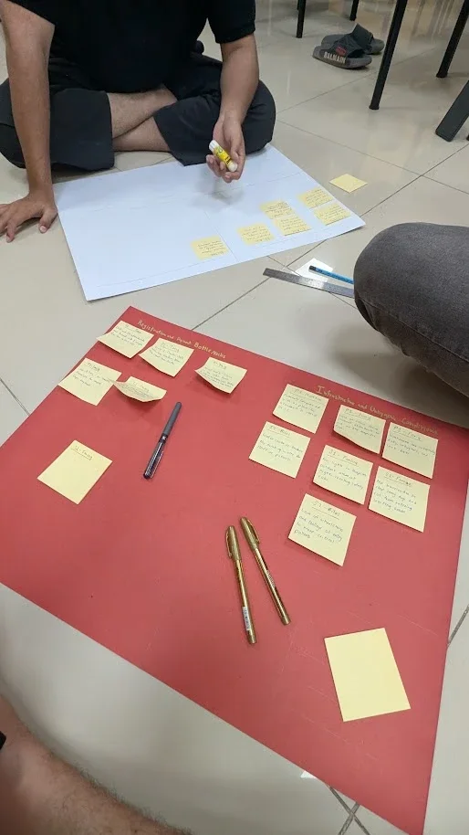

Projects
Robots, 3D printing, research and creative work. Click photos in the galleries to view them larger.

Line Following Robot
An autonomous line following robot of the kind used in robotics competitions such as Robotron and Edvon. A front-mounted sensor array reads the track, an Arduino processes the readings, and an L298 motor driver module steers the drive wheels to keep the robot locked onto the line.
- Arduino-based control with a stacked shield for clean wiring
- L298 module with heatsink driving the left and right motors
- Compact blue chassis with a front-mounted sensor bar and ribbon-cable wiring

Robo Sumo Bot
A compact, heavy sumo robot of the kind used in robotics competitions such as Robotron and Edvon, built to push opponents out of the ring. A black body with a low front wedge, grippy green wheels, two high-current motor driver boards and an Arduino Uno as the brain.

Robo Race Car
A four-wheel-drive racing robot of the kind used in robotics competitions such as Robotron and Edvon, on a clear acrylic chassis. Four yellow geared motors are driven through an L298 module and controlled by an Arduino Uno, tuned for speed and straight-line stability.

DIY Generator
A hand-built electric generator made from nails and copper wire coils arranged around a central rotor body, built to understand electromagnetic induction by making it from scratch.



3D Design & Printing
Learned to design my own parts in Tinkercad and bring them to life on a Bambu Lab A1 3D printer, from the first digital sketch to a finished physical print.
- Modelled projects from scratch in Tinkercad
- Operated a multi-spool Bambu Lab A1 printer with colour switching
- Printed enclosures, brackets, a custom nameplate and a lettered cube



Affinity Diagram: Hospital Emergency Room Study
A design thinking project where my team grouped our observations of a public hospital emergency room into themes with an affinity diagram, then turned them into clear problem statements.
- Sorted sticky-note observations into two clusters: Registration & Payment Bottlenecks, and Infrastructure & Unhygienic Conditions
- Wrote Point-of-View statements for a low-income daily wage earner and a stressed patient attendant
- Framed How-Might-We questions, such as combining token generation and payment into a single counter
AI Assistant for Deaf Community
Designed and developed a machine learning model to bridge communication gaps for deaf individuals, interpreting gestures or visual inputs into actionable data.
Automatic Water Level Sensing Machine
Engineered an automated hardware solution using Arduino and ultrasonic/fluid sensors to monitor and control water levels dynamically.
WordPress Web Solutions & Media
Developed custom WordPress websites integrated with tailored digital media, custom photography, and promotional video content.